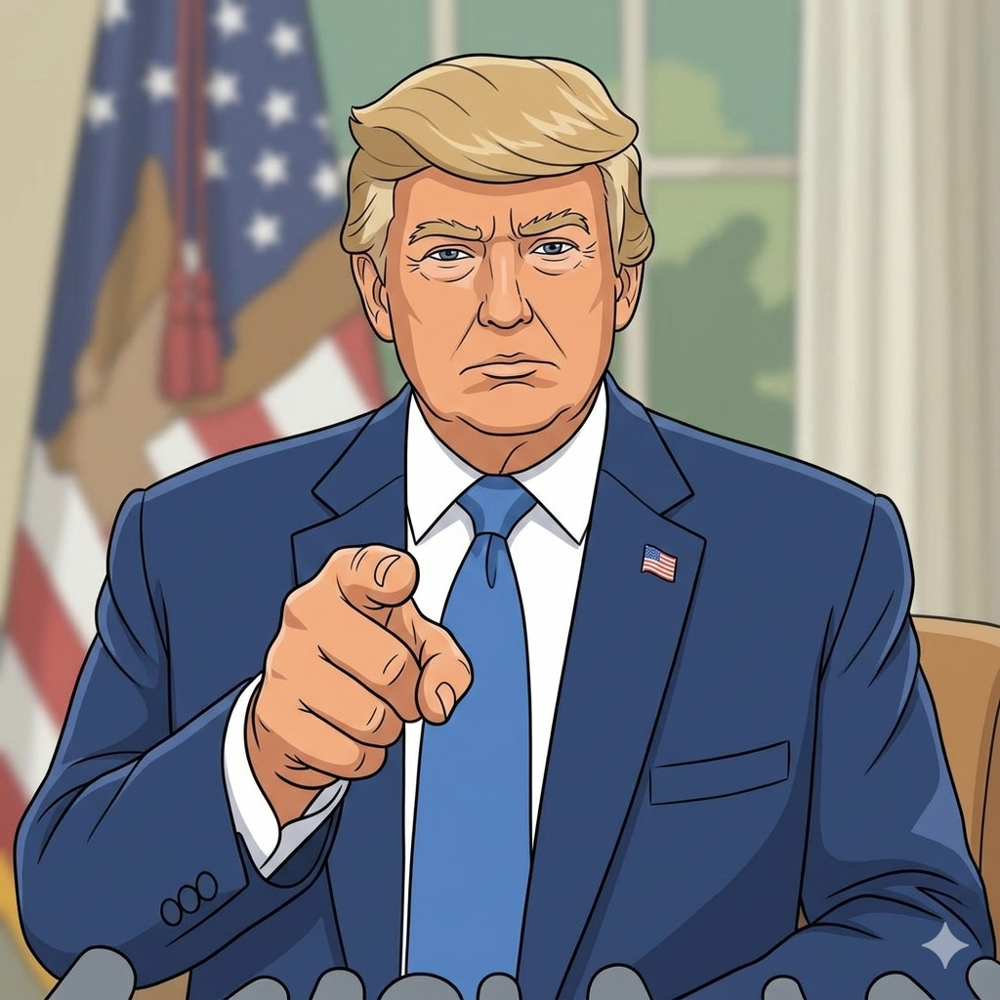

USA vs IRAN
El conflicto bélico en Irán ha alcanzado un punto crítico tras varios días de bombardeos sistemáticos por parte de las fuerzas de Estados Unidos e Israel. La ofensiva, denominada por algunos sectores como Operación Furia Épica, ha logrado desmantelar gran parte de la infraestructura de defensa aérea iraní, permitiendo que el Pentágono declare un control casi absoluto sobre el cielo de ese país. Esta superioridad ha facilitado ataques de precisión contra centros de mando, almacenes de armamento y bases navales, dejando a la armada iraní con pérdidas significativas en el Golfo Pérsico y el Océano Índico. En el ámbito político, el golpe más devastador ha sido la muerte del líder supremo, el ayatolá Alí Jameneí, quien falleció durante un bombardeo a su residencia oficial en Teherán. Junto a él, se ha confirmado la pérdida de otros altos mandos militares y figuras clave del gobierno, lo que ha generado un vacío de poder sin precedentes. Mientras el gobierno iraní intenta reorganizarse bajo un triunvirato de emergencia, las autoridades han declarado varias semanas de luto nacional, aunque mantienen una retórica desafiante prometiendo represalias contra los intereses occidentales en la región. La respuesta de Irán no se ha hecho esperar, utilizando su arsenal de drones y misiles para atacar objetivos en países aliados de Estados Unidos. Se han registrado impactos en aeropuertos, bases militares y zonas urbanas de naciones vecinas como Kuwait, Arabia Saudita y los Emiratos Árabes Unidos. Estos ataques han generado una inestabilidad inmediata en el comercio global, provocando cierres temporales de rutas aéreas y una caída drástica en las bolsas de valores de Asia y Europa debido al temor por el suministro de energía. Por su parte, el presidente Donald Trump ha defendido la intervención como una medida preventiva necesaria para neutralizar amenazas inminentes. En sus declaraciones más recientes, ha sugerido que las operaciones militares podrían extenderse durante varios meses si el régimen no cede o si el pueblo iraní no inicia un levantamiento para cambiar su liderazgo. Mientras tanto, la comunidad internacional observa con preocupación la crisis humanitaria que comienza a gestarse en las ciudades más afectadas y el riesgo de que el conflicto se expanda hacia otros frentes en el Medio Oriente.
Leer más